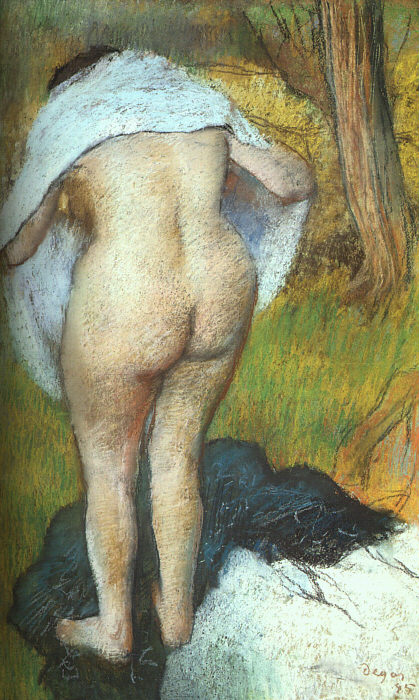
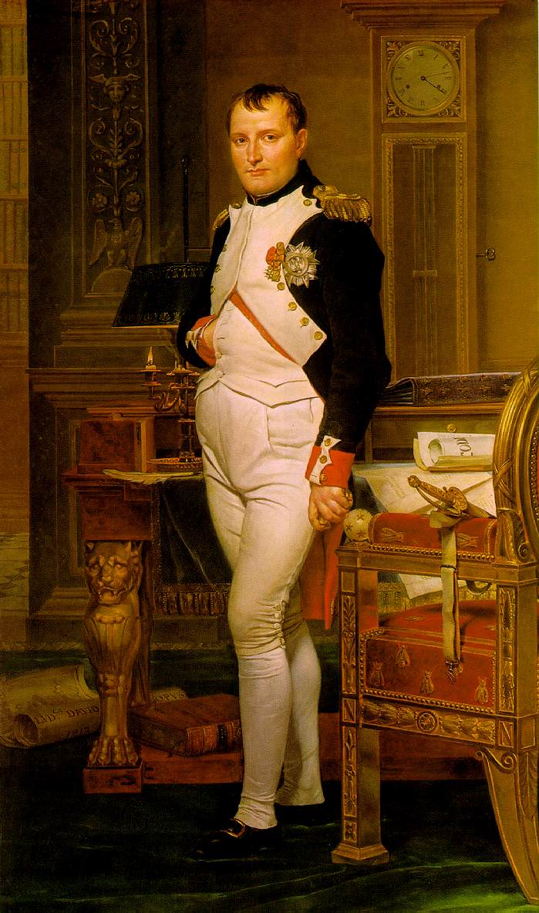
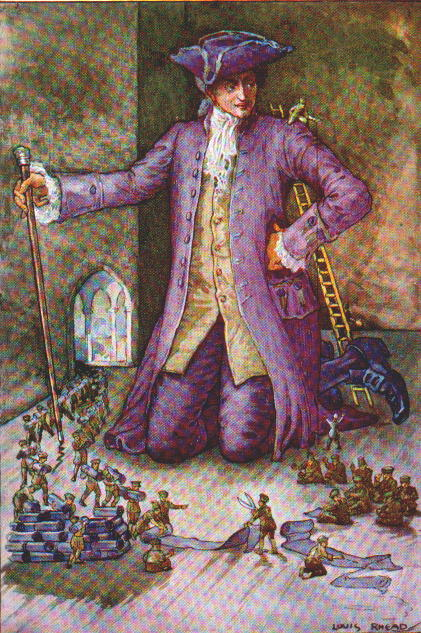

§ Home § Search § SoupTales § Any comments?
Soup Diets--and Why They Work
(e-SoupSong 5: September 1, 2000)
ONCE UPON A TIME, soup was primarily prescribed to STIMULATE the appetite, not depress it. That magnificent "Monarch of the Kitchen" Antonin Carême--chef to Talleyrand, Tsar Alexander I, George IV, and Baron Rothschild--stipulated that soup "must be the agent provocateur of a good dinner." And gastronome Alexandre-Balthazar-Laurent Grimod de la Reynière opined that "soup is to dinner what the portico or the peristyle is to an edifice. That is to say, not only is it the first part, but it should be conceived in such a way as to give an exact idea of the feast, very nearly as the overture to an opera should announce the quality of the whole work."
Oh, right. Mmmm. But those were the days when even the leisured classes got a fair amount of exercise (no cars), didn't eat snacks (no refrigeration; mouth-buckling preservatives), and had little concept of "empty calories." It was also a time when ideal feminine beauty was on the plump side
;
manly torsos were comfortable ;
and fleshiness was a sign of affluence and position in a poor, thin world .
{kind=link}
{kind=link}
{kind=link}
Not so anymore. And ain't it great that soup--early a way to stretch tough and meager ingredients, later a way to tickle dainty tastebuds--now, in its soulful adaptability, soup is one of the most reliable ways around to shed those unwanted pounds.
How so?
For a bunch of reasons--all working together to shrink our burgeoning waistlines.
ITEM 1. Eating soup at the start of a meal fills the stomach, which signals the brain to curtail appetite.
A 10-week study involving 10,000 students at the University of Pennsylvania in the late 70s gave proof to this commonsense observation. Imagine! Ten thousand contrary kids (that's more than the entire population of Bill Clinton's hometown of Hope, Arkansas) agreeing that when they started a meal with soup, they got full fast and ate less.
ITEM 2. Eating soup fools the body's natural sensors into thinking more calories have been consumed than actually have.
Dr. Elizabeth Bell, University of Pennsylvania, conducted a study in 1999 to determine "if the effect of increasing the water content of food can enhance the effect of that food on satiety, therefore reducing subsequent calorie intake." That is to say: One day her cadre of 24 women began lunch with a 270-calorie chicken-rice casserole; next day they started with that same casserole plus drank a 10-ounce glass of water with it; on the third day, they started with the casserole and water mixed together, heated, and served as a soup. After each round, researchers measured exactly how much the women ate during the rest of the meal. Hands down victory for the soup: instead of chowing down for 300+ calories at the open buffet, as they had the first two days, the soup eaters daintily pushed their plates away after 200 calories.
ITEM 3. Eating soup is a low-calorie way of satisfying a person's need for a certain VOLUME of food.
Nutrition researcher Barbara Rolls conducted studies in the late 1990s that show people eat the same weight of food day after day, pretty much no matter what. So you can eat that weight in hamburgers or in tuna fish sandwiches or in candy bars...or you can eat that weight in soup. Now then: if you regularly choose those nice low-calorie soups--say, every day at lunch--you're going to lose weight. Just that many fewer calories to burn.
ITEM 4. Eating soup regularly helps you lose weight because it changes your eating patterns.
In 1979, Dr. Henry Jordan, behavioral weight-control specialist, made some 500 volunteers eat soup for lunch every day for 10 weeks. His findings? Soup eaters consumed fewer calories and lost an average of 20% of their excess body weight. Why? Because soup is complicated to eat--it takes time and motor skills to consume, so you tend to eat less: You have to sit down to eat it. You have eat it with a utensil--and can only shovel in so much soup per spoonful. You can't gulp it down--because it's hot. If you put it in a big bowl, you're fooled into thinking you're eating a big portion. Then, because it comes as a complex package of stuff--different textures, shapes, and tastes all together and all at once--you have to work it around in your mouth, not to mention worrying about slurping and slopping it all over the place. Compare the 500-calorie bowl of phó, which takes a good 30 minutes of concentrated pleasure to get down, not to mention wiping the sweat off the back of your head, with...going to McDonald's car take-out window so you can wolf down that 1,420 calorie Xtra with cheese and super fries while you've still got the blinker on to pull out of the parking lot.
So soup is a very good thing for dieters--a sure thing, if you eat it regularly and avoid the cremes and the beurres--and it's potentially interesting and satisfying no matter how often you eat it, whether it's cool Tarator, spicy Laksa, rich Sopa de Camaraõ, or hearty Borscht.
But yes, yes. I hear what your thinking. When's she going to talk about That Cabbage Soup Diet, the diet "sensible" people love to hate?
Well, right now. And you know what? I like it. I like the diet (it works). And I like the soup (especially cold in the summer-it is so pure you feel like you've plunged into a mountain lake when you eat it). Hey, join the crowd: even French composer Erik Satie intoned, "I love cabbage soup" in his "Pecadillos" (though, correctly, he "loves [his] darling mummy more").
So! If you want to drop some pounds fast, rediscover your waist, or kickstart a longer weight-loss campaign, this may be your 7-day cup of soup. It's low fat, high fiber, low calorie, high vitamin C/vitamin A/potassium. It's cleansing--trés detox. You can eat it like a pig. And you can vary it endlessly: hot or cold; big chunks, fine dice, or puree; spiced, herbed , or splashed with balsamic vinegar. Ishbel from Scotland recommends adding curry. And while it's not exactly endorsed by conservative harumphing MDs, it isn't exactly condemned either, as it poses practically no health risk.
The polling data is compelling. Among others, Cheemoandia dropped 65 pounds; Kate from Ohio swears by it; Barbara from Ijsselmuiden loved it but didn't have a refrigerator big enough to store it; and Jill Deutsch from New York has used it as a kickstart to lose 30 pounds. Vicki Davidson from Arizona adds, "when the diner eats slowly, stomach and brain can reach agreement about the body's satiation." And Corinne and Lou from California wrote to say that they never succeeded with a diet til Lou invented a soup diet, reasoning that no one ever got fat on soup. Corinne says, "25 lost pounds or so later, he was right." Pam adds, "used the Cabbage Soup diet and lost 62 lbs. Did not feel hungry at all and sure felt good about the way I looked and felt. Highly recommend it to anyone."
So that's how it is for soup and soup diets. Of course there's also spicy soups that cure migraine headaches. Chicken soups that cure colds. Broths and bouillons for restoring invalids to health or strengthening new mothers after the rigors of childbirth. Soups that drive away hangovers…. Ah, but these all have stories of their own.
Best regards, Pat Solley
* * *
NEXT MONTH: WHO PUT THE PAPRIKA IN GOULASH...AND OTHER HUNGARIAN SOUP STORIES.
Now, the big question: just how good can soup make you feel, anyway? Let that skinny Raffy Conti sing it out to you in "The Soupsong" (sung to "Polly Wolly Doodle All the Day"):
Oh I had some tea and soup called pea
I was eating chicken noodle all day
I found a big bone and was eating minestrone
I was eating chicken noodle all day
I felt good, I felt good, I felt real good today
I had a big banana and I went to Soup Havana
I was eating chicken noodle all day.
I had tomato soup and baked potato soup
I was eating chicken noodle all day
I had a soup tornado and then a soup Alfredo
I was eating chicken noodle all day
I felt good, I felt good, I felt real good today
I had a big banana and I went to soup Havana
I was eating chicken noodle all day.
I don't want a card but some soup with Swiss Chard
I want a Lamborgini and a soup with tortellini
I was eating chicken noodle all day
I felt good, I felt good, I felt real good today
I had a big banana and I went to soup Havana
I was eating chicken noodle all day!!
I was eating chicken noodle all the day! Hey!